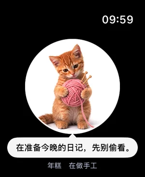
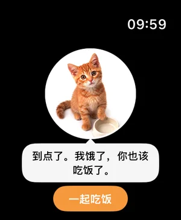
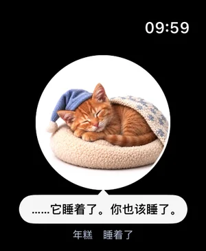

你把三个环都合上了。我戴了帽子庆祝，你可能没看见。
带一只小猫回家，给它起个名字。它饿了，是你该吃饭了；你动，它也动；它睡了，你也该睡了。
每个盒子：没开过的品种各 1/6，开过的不会再开到。这里随便开；App 里每盒 $1.99。
早。我醒了，你呢？
它不设闹钟，只是醒了就来找你。抬腕看一眼手表，它就在那儿。
到点了。我饿了，你也该吃饭了。
点一下告诉它你在吃，它也跟着吃。两顿饭之间它会口渴，那是在提醒你该喝水了。
你跑我也跑。我腿短，按步数算我赢。
经你允许，它读取「健康」里的步数和锻炼时间。每走 2000 步，它多一条小鱼干。
你把三个环都合上了。我戴了帽子庆祝，你可能没看见。
你坐着不动心跳却很快，它会过来问问你。
我要睡了。你也该睡了。
说晚安，它就蜷起来睡。早上醒了，它会来叫你。
它要的不多。只是整天都在：在你口袋里的手机上，也在你手腕上的表上。

在手腕上Apple Watch 上抬腕就能看到它。按住摸它，转动数码表冠逗它，点一下回应它的提醒。iPhone 和手表保持同步。
 跟着你的一天过
跟着你的一天过吃饭、喝水、睡觉、起床。它提醒你的方式和猫一样：自己先饿。
 你动，它也动
你动，它也动「健康」里的步数、锻炼、心率和圆环。你去跑步，它跟着一起运动。
 会回话，但话不多
会回话，但话不多跟它讲讲你的一天，它用自己的脾气、用你说的语言回你。回得短，因为它是猫。
 写日记
写日记每天一句，写的是你真实过的这一天：走了多少步、一起吃了几顿饭、你摸了它几次。
 什么都不拿走
什么都不拿走没有账号，没有广告，没有跟踪。日记和健康数据不会离开你的设备。


抬起手腕它就在：在织毛线，在碗边等你，或者睡着了。摸它、逗它、回应它，都不用掏手机。
跟它讲讲你的一天，它用自己的脾气、用你说的语言回你。它回得短，因为它是猫。
年糕 · 在跟你一起歇着它拿爪子捂住了脸经你同意后，回答由 AI 语言模型来写；不同意也没关系，它用手机里的简单规则回你，你写的内容不会离开手机。
你把三个环都合上了。我戴了帽子庆祝，你可能没看见。
你走了 9,412 步。我腿短，在心里跟完了全程。
三顿都是一起吃的。今天是好日子。

第一天。你把我带回家了。
脾气各不一样。前六只随时可以带回家；另外六只品种猫装在纸箱盲盒里，每盒 $1.99，拆之前就告诉你概率，开过的不会再开到。
 年糕橘猫
年糕橘猫 墨点奶牛猫
墨点奶牛猫 小满三花
小满三花 灰灰蓝猫
灰灰蓝猫 夜宵黑猫
夜宵黑猫 煤球暹罗
煤球暹罗 汤圆布偶盲盒
汤圆布偶盲盒 奶糖拿破仑盲盒
奶糖拿破仑盲盒 花卷孟加拉豹猫盲盒
花卷孟加拉豹猫盲盒 南瓜金渐层盲盒
南瓜金渐层盲盒 芝麻美短盲盒
芝麻美短盲盒 栗子挪威森林猫盲盒
栗子挪威森林猫盲盒六只小猫、提醒、日记、Apple Watch，以及每天 20 句由 AI 语言模型回答的聊天，都免费。想要品种猫，纸箱盲盒每盒 $1.99，开到的猫一直是你的。想聊多少聊多少，订阅「猫在 Plus」：美国区每月 $4.99 或每年 $29.99。
猫在（Maozai）是一只住在 iPhone 和 Apple Watch 里的电子宠物猫，App Store 上的名字是「猫在：你的口袋猫」（英文 Maozai: Your Pocket Cat）。带一只小猫回家，它跟着你过一天：饭点会饿，两顿饭之间会渴，你动它也动，夜里要睡觉，照顾它就是在提醒自己吃饭、喝水、睡觉。它和其他叫 Pocket Cat 的应用没有关系。
能。手表上抬腕就能看到它：按住摸它，转数码表冠逗它，点一下回应它的提醒，iPhone 和手表保持同步。第一次要先在 iPhone 上带猫回家；之后手表不是必需的，只用 iPhone 也可以。
下载免费，没有广告。六只小猫、所有提醒、日记、Apple Watch 和每天 20 句 AI 聊天都免费。另有两项可选：纸箱盲盒装着另外六只品种猫，每盒 $1.99，一次性购买；「猫在 Plus」订阅每月 $4.99 或每年 $29.99，聊天不限句数（合理使用上限每天 600 句）。以上是美国区价格，其他地区会不同。
每盒装着六只品种猫中的一只：布偶、拿破仑、孟加拉豹猫、金渐层、美短、挪威森林猫。付款前就告诉你可能是谁、各自的概率：还没有的每只概率相同，第一盒 1/6，第二盒 1/5，依此类推。开过的不会再开到，所以六盒（共 $11.94）一定集齐六只。开到的猫一直是你的，换了新手机点「恢复已开的盲盒」就回来。
不需要。没有注册，也没有登录，打开就能用。购买走你的 Apple 账户。
四样，而且要你允许：步数、锻炼时间、心率和健身圆环。只读不写，数据不会离开你的设备。每走 2000 步它多一条小鱼干，三个环都合上它戴帽子庆祝，你坐着不动心跳却很快，它会过来问问你。
你同意之后，它的回答才由 AI 语言模型来写：你说的话会发到我们在美国的服务器，再交给 AI 语言模型服务，不会被保存。不同意的话，它用手机里的简单规则回你，你写的内容不会离开手机。App 里没有广告、没有跟踪，也没有任何第三方软件。
iOS 18 或更高版本的 iPhone。手表 App 需要 watchOS 11 或更高版本，并和 iPhone 配对。没有安卓版。
英文和简体中文。聊天时它用你说的语言回你。
可以。在设置 › 我的猫里，已有的猫随时可以换回家，换多少次都行。每只猫都留着自己的名字、聊天和日记，换猫不会清空任何东西。
不是。猫在是陪伴型的 App，不是医疗器械，它说的话也不是医疗建议。叫你吃饭、喝水、运动、睡觉，只是提醒，不是健康方案。
Maozai · a cat that keeps you company.
在 App Store 下载